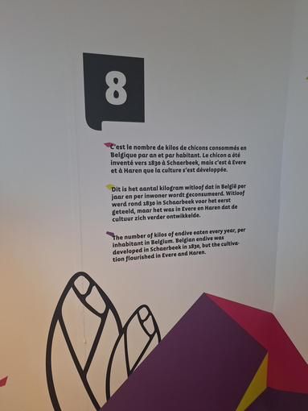

Exposition
Le chicon,
Durant l’exposition Bruxelles expérience une anecdote a fait écho dans mon esprit. Il est clair que je parle du Chicon et des 8 kg par habitant qui sont consommés annuellement en Belgique. J’ai aussi appris que celui-ci a vu le jour dans la ville où j’ai grandi. Je parle Bien évidemment de Bruxelles.
D’après la légende, c’est à Schaerbeek en 1830 qu’un paysan qui aurait voulu dissimuler sa récolte dans une cave sombre et humide afin d’éviter l’impôt.
Une autre hypothèse, probablement la plus plausible, vaudrai que ce soit Francois Brezier aux alentours de 1840 pour relancer le jardin du Botanique fit pousser la forme primitive de chicon dans les caves à champignon du jardin.
Pourquoi avoir opté pour la thématique du chicon, vous allez me dire ? Il est indéniable que l'exposition Bruxelles expérience regorge d'informations et aborde des sujets historiques captivants. Mais cette anecdote à réveiller des souvenirs ou même des sensations, le souvenir que mon père en cultivait, de certains moments où je l’ai mangé sous forme de différents plats et du fait que ce soit mon légume préféré, a fatalement réveiller certaines sensations liées au goût très agréables.
En conclusion, on peut dire que j’adore le chicon.